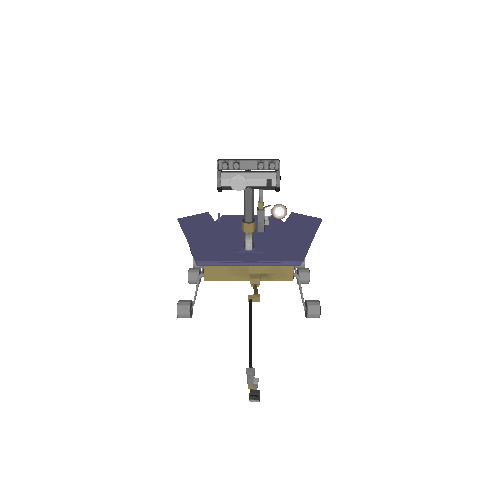
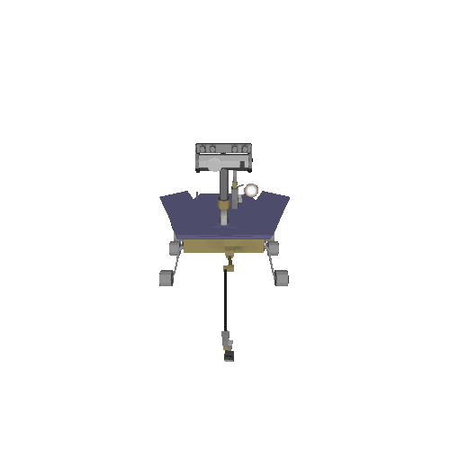

Rover GUI (Graphical User Interface)
Drag Mouse for 3D View
Captured by Rover Curiosity
Rover
Curiosity
Rover
Opportunity
Rover
Spirit

 

-95.4°C Min
-4.4°C Max


Mars habitats require advanced insulation to withstand extreme cold, low pressure, and intense radiation. Materials like aerogel, multi-layer insulation (MLI), and foam glass offer exceptional thermal protection while remaining lightweight.
Mars Radiation Risk Assessment and Shielding Design for Long-term Exposure to Ionizing Space Radiation - NASA Technical Reports Server (NTRS)

Developing Reliable Life Support for Mars - NASA Technical Reports Server (NTRS)
Mars Surface Power Generation Challenges and Considerations - NASA Technical Reports Server (NTRS)
A Nuclear Fission Reactor (Kilopower)
B. Solar Arrays
A Smart Grid Control
B. DC Power Buses
A. Battery Banks (Li-ion)
B. Regenerative Fuel Cells
C. Thermal Storage
To live off the land on Mars by turning local resources like water ice, carbon dioxide, and soil into essentials such as fuel, oxygen, building materials, and power.

Harnessing Synthetic Communities and Microbial Recycling of Space Waste Streams for Biomanufacturing Applications - NASA Technical Reports Server (NTRS)

NASA-STD-3001 Volume 2, Revision E, NASA Spaceflight Human-System Standard Volume 2: Human Factors, Habitability, and Environmental Health - NASA Technical Reports Server (NTRS)

Temperature Swings: −125°C at night to +20°C in daytime.


Local: 500 Mbps | Surface: 1.2 Mbps avg